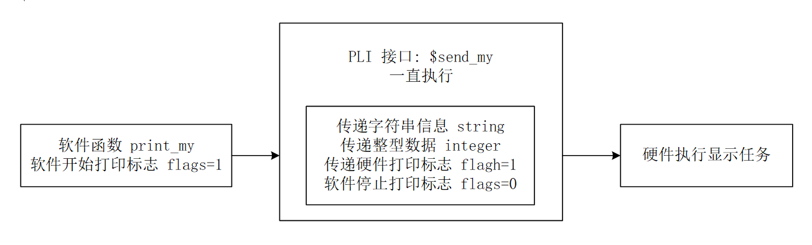
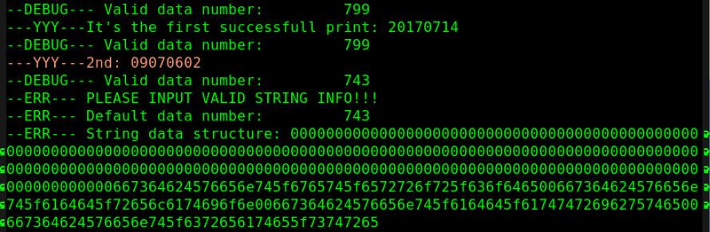

Características funcionales
Las subrutinas TF (task/function) se utilizan principalmente para la transferencia de datos en ambas direcciones a través de la frontera entre Verilog y el programa C del usuario.
Las subrutinas TF siempre llevan el prefijo tf_ y se definen en el archivo de cabecera veriuser.h. Por lo tanto, al escribir tareas o funciones de sistema en C, es necesario añadir #include "veriuser.h" en el archivo C.
Los usos de las subrutinas TF se pueden clasificar en:
- Obtener información de la tarea de sistema
- Obtener información de la lista de parámetros
- Obtener valores de parámetros
- Devolver los valores de parámetros a la tarea de sistema
- Monitorear cambios en los valores de los parámetros
- Obtener información sobre el tiempo de simulación y eventos programados
- Operaciones aritméticas
- Mostrar información
- Tareas de administración y mantenimiento
- Otras tareas como suspender, terminar, guardar, restaurar, etc.
Para la lista completa de subrutinas TF y una descripción de su uso simple, consulte la siguiente sección."8.3 Lista de subrutinas TF"。
Ejemplos de subrutinas TF
La biblioteca de funciones de subrutinas PLI es muy extensa; explicarlas una por una requeriría mucho espacio. Por lo tanto, se sugiere estudiar en detalle subrutinas específicas cuando surja la necesidad. A continuación se muestran ejemplos de algunas subrutinas TF, principalmente para ilustrar el flujo básico de diseño de tareas de sistema Verilog utilizando subrutinas TF.
Requisitos de diseño
A veces, para reducir el tamaño del archivo objeto después de compilar el archivo C, o para generar información de depuración en un formato específico, las funciones de impresión en el software pueden no usar la función printf de C, ni usar la función io_printf de las subrutinas TF, sino que utilizan la interfaz PLI y las funciones de visualización del sistema Verilog ($display o $write) para implementar una función de impresión definida por el usuario.
En esta ocasión se diseña una función de impresión de software llamada print_my, cuyo formato de salida es "cadena + entero".
Análisis de diseño
La función de impresión de software definida por el usuario print_my es solo una envoltura simple, que se utiliza para transferir la información de impresión a las variables de parámetros formales del software. Para transmitir la información de impresión a Verilog, también se necesita una tarea de sistema construida con subrutinas TF, llamada $send_my().
Cabe señalar que las tareas de sistema implementadas con subrutinas TF generalmente deben invocarse en código Verilog. Si el software llama directamente a esta "tarea de sistema", equivale a llamar a una función de software y no tiene relación directa con la descripción de las variables relevantes en el código Verilog. Por lo tanto, llamar directamente a la "función de software" send_my dentro de la función de software print_my no tiene sentido; es necesario agregar en print_my ciertos comportamientos de software específicos para provocar que la tarea de sistema $send_my sea invocada por Verilog.
Si el sistema digital incluye una CPU, se puede usar el método de escribir en el bus o en la memoria mediante software y luego monitorear las señales/variables relevantes en el testbench. Como el diseño de esta ocasión es de pequeña escala, se puede adoptar otro método: Verilog ejecuta continuamente la tarea de sistema $send_my, y en la función de software print_my se establece una variable global para controlar si se realiza la transmisión de información y la operación de impresión.

Diseño del software
El código de diseño del software es el siguiente; los detalles se explican en los comentarios. Guárdelo en el archivo print_gyc.c.
Ejemplo
//Cadena a imprimir, datos enteros, indicador de inicio de impresión del software
char *str_mes ;
unsigned int int_mes ;
int flags = 0;
//===== define print_my() used in C ======
void print_my(char * str_send, unsigned int int_send){
str_mes = str_send ;
int_mes = int_send ;
flags = 1 ;
}
//Datos de caracteres correspondientes al código ASCII de la cadena a imprimir; la longitud original de caracteres está limitada a 100
//Por ejemplo, el carácter "1" con código ASCII 0x31 se representa como datos de caracteres 0x33, 0x31
char str_mes_format[200] ;
//Cuando las subrutinas TF transmiten datos de tipo cadena, solo pueden transmitir datos en el formato de la base numérica correspondiente
//Por ejemplo, se puede transmitir "0xc0de1234", pero no se puede transmitir "www.runoob.com"
//Por lo tanto, es necesario convertir los datos de cadena originales en datos de caracteres correspondientes al código ASCII
void byte2hexstr(char* str, char* dest, int len)
{
char tmp;
int i ;
char stb[16] = { '0', '1', '2', '3', '4', '5', '6', '7', '8', '9', 'A', 'B', 'C', 'D', 'E', 'F' };
for (i = 0; i < len; i++){
tmp = str[i];
dest[i * 2] = stb[tmp >> 4];
dest[i * 2 + 1] = stb[tmp & 15];
}
return;
}
//===== define PLI: send_my() =======
void send_my(){
int i = 0 ;
//Se detecta el indicador de inicio de impresión del software flags
//Y la tarea de sistema $send_my recibe 3 parámetros cuando es invocada por Verilog
if (flags && tf_nump()==3) {
//Convierte los datos de cadena a imprimir en el tipo de cadena correspondiente a ASCII
byte2hexstr(str_mes, str_mes_format, 100);
//Pasa los datos de caracteres hexadecimales al segundo parámetro de la tarea de sistema send_my
//Longitud de 1600 bits, correspondiente a 100 chars, 200 datos de caracteres ASCII
tf_strdelputp(2, 1600, 'H', str_mes_format, 0, 0);
//Pasa los datos enteros al tercer parámetro
tf_putp(3, int_mes);
//Pasa el indicador de inicio de impresión del hardware al primer parámetro
tf_putp(1, 1) ;
flags = 0 ;
}
}
Diseño del hardware
Según la prueba de simulación, la forma en que los datos transmitidos por el software a Verilog se almacenan en un registro de 1600 bits de ancho se muestra en la siguiente figura.

Cuando el registro contiene datos normales, comienza a almacenar los datos de caracteres normales a partir del bit 799 (la mitad del ancho del registro). El ancho restante en los bits bajos almacena "NULL" (correspondiente al dato 0) y los datos predeterminados del sistema. Las longitudes de estas dos partes de datos varían según la longitud de los datos normales almacenados.
Cuando el registro no contiene datos normales, utiliza una longitud de registro superior a 800 bits para almacenar "NULL" (correspondiente al dato 0). El ancho restante almacena los datos predeterminados del sistema.
Según estas características, se pueden detectar los datos de cadena normales sin necesidad de imprimir todos los datos del registro, para evitar que aparezcan gran cantidad de espacios en la información impresa, lo que afectaría la estética.
El código Verilog de hardware se diseña de la siguiente manera; los detalles específicos se explican en los comentarios. Guárdelo en el archivo test.v.
Ejemplo
module test ;
reg [1599:0] str_my ;
reg [31:0] int_my ;
reg flag_my ;
//Detectar en todo momento el indicador de impresión de hardware flagh para determinar si imprimir
integer i = 1599;
integer j = 1599;
reg [7:0] str_tmp ; //Registro de almacenamiento de datos de cadena
initial begin
flagh = 0 ;
forever begin
#20 ;
//Invoca la tarea de sistema y transfiere los datos del software al hardware (Verilog)
$send_my(flagh, str_my, int_my);
if (flagh) begin //Comienza a imprimir información
#1 ;
//El ancho de bits del registro tiene redundancia; imprimirlo todo generaría gran cantidad de espacios
//Aquí se detectan los registros no utilizados y se enmascara la impresión
for(i=1599; i>=0; i= i-8) begin
if (str_my[i -: 8] != 0)
break ;
end
//Generalmente se usa la mitad del ancho del registro para almacenar los datos de cadena
//Por lo tanto, cuando la transmisión de la cadena es correcta, hay datos a partir de str_my
$display("--DEBUG--- Valid data number: %d", i);
//Si no hay datos de cadena, str_my tampoco estará completamente vacío
//Pero str_my[799 -: 8] no tendrá datos
if (i<=791) begin
$display("--ERR--- PLEASE INPUT VALID STRING INFO!!!");
$display("--ERR--- Default data number: %d", i);
$display("--ERR--- String data structure: %h", str_my);
end
else begin
$write("---YYY---");
for(j=i; j>=0; j= j-8) begin
str_tmp = str_my[j -: 8] ;
//Detener la impresión cuando se detecte nuevamente un carácter nulo
if (str_tmp == "") begin
break ;
end
//Imprimir carácter por carácter
else begin
$write("%s", str_tmp);
end
end
//Imprimir datos enteros
$write("%h \n", int_my);
end
/* $display no admite acceso a campos de vector de registro con variables
//Por lo tanto, la siguiente descripción no es correcta; solo se puede usar $write para imprimir sucesivamente
else begin
$display("--YYY--- %s%h", str_my[i : j], int_my);
end
*/
flagh = 0 ;
end
end
end
//Detener la simulación
initial begin
forever begin
#10000;
if ($time >= 300) $finish ;
end
end
endmodule
Llamada desde el software
Dado que la parte de software de este diseño no puede ejecutarse de forma activa, se añade otra tarea de sistema Verilog diseñada con subrutinas TF. Cuando esta tarea de sistema se ejecuta en el testbench, puede llamar a la función print_my del programa de software.
Agregue el siguiente código C en el archivo print_gyc.c:
if (tf_getp(1) == 1) //Si el valor del primer parámetro de la función de sistema es 1
print_my("It's the first successfull print: ", 0x20170714);
else if (tf_getp(1) == 2) //Si el valor del segundo parámetro de la función de sistema es 2
print_my("2nd: ", 0x09070602);
else
print_my("", 0x1); //Si no se transmite la cadena, se muestra un error
}
Agregue el siguiente código Verilog en el archivo test.v:
initial begin
#100 ;
$call_c_print(1);
#100 ;
$call_c_print(2);
#100 ;
$call_c_print(3);
end
Compilación y simulación
En Linux, use el siguiente comando para compilar print_gyc.c y generar el archivo print_gyc.o; preste atención a la ruta relativa.
gcc -I ${VCS_HOME}/include -c ../tb/print_gyc.cPara compilar con VCS, es necesario crear un archivo de tabla de enlace reconocible por VCS, con el nombre pli_gyc.tab, cuyo contenido es el siguiente.
$send_my, $call_c_print son los nombres de las tareas de sistema invocadas por Verilog;
call=my_monitor, call=call_c_print, etc. indican llamadas a funciones del programa C de software;
$send_my call=send_my $call_c_print call=call_c_print
Al compilar con VCS, agregue la siguiente línea de parámetros.
-P ../tb/pli_gyc.tab
El resultado de la simulación es el siguiente.
Como se muestra en la figura, la salida de impresión es normal y no hay información de espacios sobrantes.
Cuando la información a imprimir no contiene datos de cadena, se muestra un Error y se generan algunos mensajes de depuración.
Se pueden modificar algunos parámetros en el testbench para practicar la depuración del formato de almacenamiento de datos.

Haz clic para compartir notas
<p style="font-size:14px;">¡Las notas deben ser una extensión del contenido de este artículo!</p><br> <p style="font-size:12px;"><a href="../tougao.html" target="_blank">Para enviar un artículo, haz clic aquí</a></p> <p style="font-size:14px;"><a href="./runoob-user-test-intro.html" target="_blank">Cómo obtener el código de invitación de registro</a></p> <h3 class="text-muted"><i class="fa fa-info-circle" aria-hidden="true"></i> ¡Antes de compartir notas, debes <a href=".." class="runoob-pop">iniciar sesión</a>!</h3> <p><a href="./runoob-user-test-intro.html" target="_blank">Cómo obtener el código de invitación de registro</a></p>